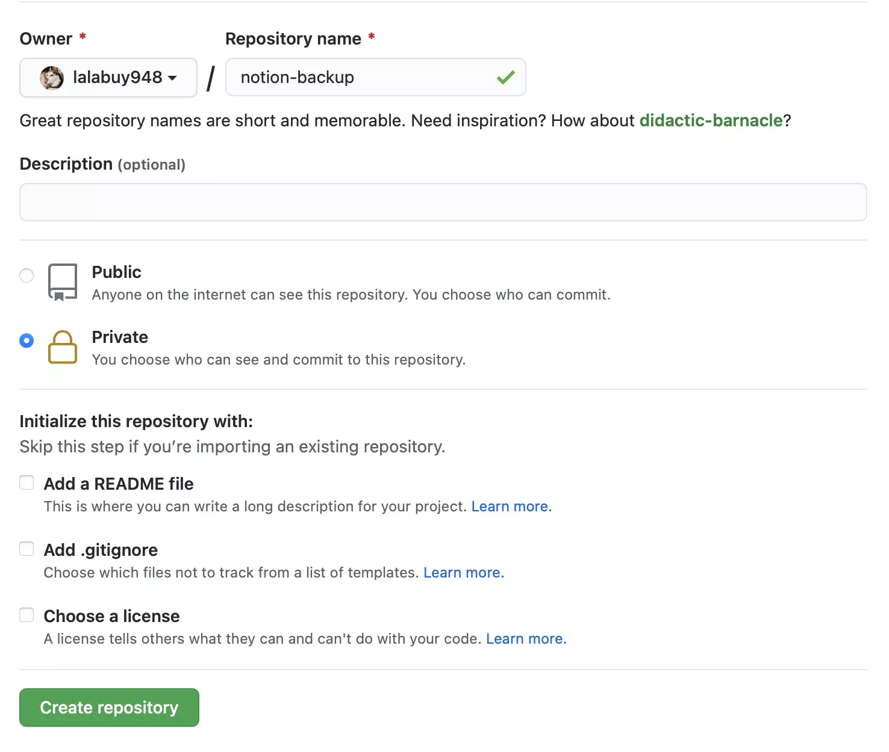
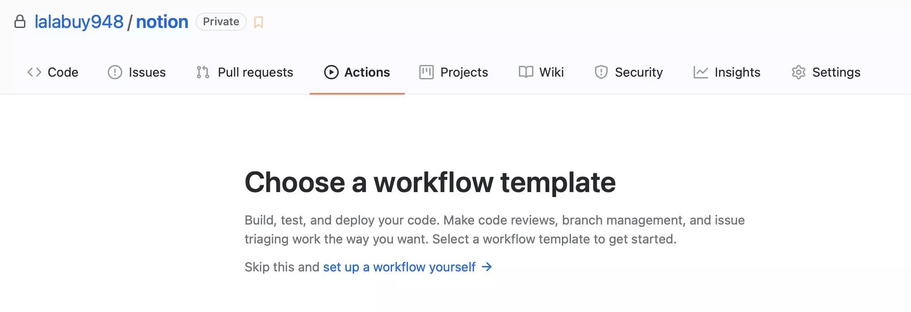
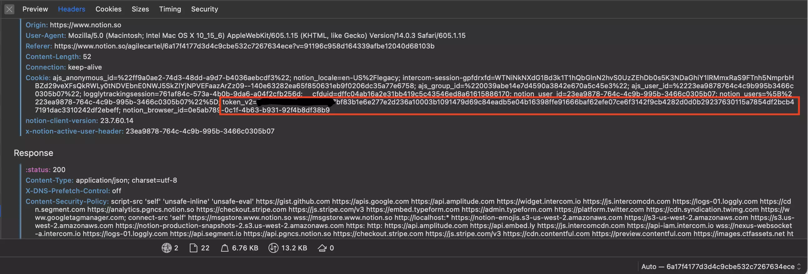
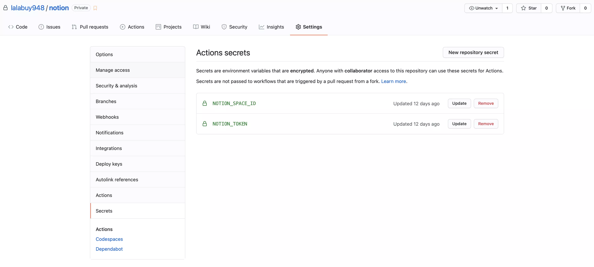

Notion Github Backup

Data is expensive
I write around 2-3 important notes a day. And don’t actually worry if my laptop will be stolen, but the data on it..
Since Im heavy notion user I was looking for automated backup solution. Not that I don’t trust notion, trust but verify, right?
Backup
- Create a private github repo

- Go to actions tab and click on
set up a workflow yourself ->

- Paste this yml file
name: "Notion backup"
on:
push:
branches:
- main
schedule:
- cron: "0 0 * * *"
jobs:
backup:
runs-on: ubuntu-latest
name: Backup
timeout-minutes: 15
steps:
- uses: actions/checkout@v2
- uses: actions/setup-node@v2
with:
node-version: "12"
- name: Setup dependencies
run: npm install -g notion-backup
- name: Run backup
run: notion-backup
env:
NOTION_TOKEN: ${{ secrets.NOTION_TOKEN }}
NOTION_SPACE_ID: ${{ secrets.NOTION_SPACE_ID }}
- name: Commit changes
uses: elstudio/actions-js-build/commit@v3
with:
commitMessage: Automated snapshot
-
Get your secrets
- Go to www.notion.so
- Go to
Settings & Members - Go to
Workspace->Settings - Open inspector in your browser and navigate to network tab (set XHR filter)
- Click on
Export all workspace content - Open any
getTasksrequest - Extract
spaceIdfrom preview andtoken_v2from headers

- Add secrete keys
where NOTION_SPACE_ID is your spaceId from step above
and NOTION_TOKEN is your token_v2 from step above

Here we go
Now you have fully automated backup of your entire notion workspace in private github repo.
Read other posts